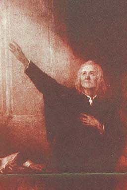

-
Adam Duff
Adam Duff was a Unitarian (Anti-Trinitarian) martyr of the fourteenth century. He denied the Incarnation and the Trinity of Persons; he was therefore said to be possessed with a diabolical spirit. He was tried and sentenced to be "burned and hanged in the fire at Hoggin-green," near Dublin. The sentence was carried out.
-
Ludwig Haetzer
On this day, Ludwig Haetzer (AKA Louis Haetzer) was beheaded on the charge of blasphemy. Haetzer, a Swiss, was all intents and purposes, alone in his thought about the true nature of God "that the Father alone is the true God - that Christ is not equal to the Father - that there are not three persons in one God, because God is altogether ineffable, being neither person nor essence."
A man of great learning, he wrote a treatise against the deity of Christ, but it was soon suppressed. Haetzer was also a composer of many hymns. There survives the following explicitly anti-Trinitarian utterance, placed in the mouth of God:
I am He who created all things through His own might. Thou askest, how many persons am I? I am one!
I am not three persons, but I am one! And I cannot be three persons, but I am one!
I know nothing of persons: I alone am the source of all life. Him who does not know me, I know not;
I alone am!
-
Catherine Vogel
Catherine Vogel (AKA Katarzyna Weiglowa) is regarded as the first recorded Polish Unitarian martyr. An old lady of over eighty years of age. She was burnt in the city of Cracow in 1539. Before her judges she avowed her view of God in the following language:
"I believe in the existence of One God, who has created all the visible and invisible world, and who cannot be conceived by the human intellect." She also denied that Jesus Christ was from eternity the Son of God. In other words, Jesus the Son of God began his existence in the womb of his mother
(as recorded in Luke 1:30-37) and not before! -
Adam Pastor
In 1546, Adam Pastor (AKA Rudolph Martens) was excommunicated from the Anabaptists of Frisia. Why? On account of his sentiments concerning the Trinity. He maintained that the Father alone was the true God. In 1547 whilst in fellowship with the Mennonites, he declared himself a unitarian, holding that Christ did not exist as the Son of God before his conception. He was subsequently excommunicated from this community because of his views of God and Jesus. For further information, as well as the above link, Adam Pastor is featured in the following video,
Unitarian Trail Blazers by Sean Finnegan
-
George Van Parris
George Van Parris, a surgeon, came to England from Germany during the first half of the sixteenth century. On his arrival in London he joined the Stranger Church in Austin Friars (pictured). It is thought he settled in London from having heard "that strangers in England were exempted from certain penal laws." This he soon learned was not so, for having declared "that God the Father was the only God, and that Christ was not very (truly) God." He was pronounced "an obstinate heretic" and was burnt in Smithfield.

-
Michael Servetus
Michael Servetus (AKA Miguel Servet, Miguel de Villanueva, 1511 - 1553) was this day, burnt alive atop a pyre of his own books at the Plateau of Champel at the edge of Geneva. Servetus was a Spanish theologian, physician, cartographer, a polymath and the discoverer of pulmonary circulation. Regarding the Trinity, Servetus wrote the following books: On the Errors of the Trinity, Dialogues on the Trinity and the Restitution of Christianity. Servetus sought to dialogue with John Calvin. Calvin vowed that if Servetus was to ever visit Geneva, "should he come, if my authority is of any avail, I will not suffer him to get out alive."
Thus, Servetus was burnt alive on the 27th of October, 1553. A strong breeze that sprung up scattered the flames and kept him in great torture for about half an hour. He was heard to exclaim, Jesus, thou Son of the Eternal God, have pity on me. So died this distinguished physician and reformer.
An eyewitness noted that if he had only moved the adjective "eternal" and called
Jesus the "Eternal Son of God," (i.e. a Trinitarian confession) his life would have been spared.
For further information, as well as the above link, Michael Servetus is featured in the following video,
Unitarian Trail Blazers by Sean Finnegan
-
John Valentine Gentilis
Gentilis spoke of the Trinity as a mere invention. He was charged by John Calvin and others at Geneva, where he had taken refuge regarding heresy, and was thrown into prison. He was offered an escape from death by signing a recantation of his opinions. In a moment of weakness he signed the recantation, acknowledging the Trinity and kindred doctrines. As soon as he could escape from Geneva he did so. For some time he led a wandering life in Savoy, France, and Germany. He bitterly repented of his prior action and employed himself afterwards in spreading his Unitarian views. He was arrested as a heretic and sentenced to be beheaded "for attacking the Trinity, and teaching that the Father is the only infinite God, whom we ought to worship." His life was offered him by the Senate if he would again renounce his religious views.
He firmly declined. Just before he laid his head on the block, he said "Many have suffered for the glory of the Son; but none so far as I know have died for the glory and superiority of the Father." -
King John Sigismund II
John Sigismund Zapolya or Szapolyai (Hungarian: Szapolyai Janos Zsigmond; 7 July 1540 - 14 March 1571) was King of Hungary as John II from 1540 to 1551 and from 1556 to 1570, and the first Prince of Transylvania, from 1570 to his death. He initiated a series of theological debates among the representatives of the concurring theological schools of the Reformation in the 1560s. He converted from Catholicism to Lutheranism in 1562 and from Lutheranism to Calvinism in 1564. Around 1567-1568, he accepted the anti-Trinitarian views of his physician, Giorgio Biandrata and court preacher Ferenc David, thus becoming the only Unitarian monarch in history. In 1568, was passed the Edict of Torda (now Turda in Romania), which emphasised that "faith is a gift of God" and prohibited the persecution of people for religious reasons. In practice, the edict only sanctioned the existence of four "received" denominations - the Catholic, Lutheran, Calvinist, and Unitarian Churches. Therefore, Sigismund's legacy is that religious tolerance remained a distinguishing feature of the Principality of Transylvania (historical region in Romania) in Early modern Europe.
-
Francis David
Ferenc David (also rendered as Francis David or Francis Davidis); was a Unitarian preacher and the founder of the Unitarian Church of Transylvania. In Latin and Hungarian he used his name as Francis Davidis or David Ferenc after his father's forename David. King John II called for three debates with Catholics, Lutherans, Calvinists and the new Antitrinitarians to discuss the Trinity. The first two debates were held at Gyualafhervat (Alba Iulia, Romania) in 1566 and 1568, and the final one was at Nagyvarad (Oradia, Romania). Francis David, thereby, disputed the mainstream Christian doctrine of the Trinity, believing God to be one and indivisible.
 -
Conversion of Kolozsvar
The third synod (Nagyvarad, present-day Oradia, in Romania) resulted in a decisive victory for Francis David and his allies. Presided by the King and attended by the leading civil officials; by the end of the long debate King John II had sided with the Antitrinitarians. Back in Kolozsvar (present-day Cluj-Napoca, Romania), David preached an exultant open-air sermon standing on a preaching stone (pictured). The stone is still housed today in the vestibule of the First Unitarian Church in Cluj. Later Unitarian historiography had it that this sermon led to the wholesale conversion of the city to Unitarianism.
Because of his influence and contribution, these words of Francis David are carved on every Unitarian church building in Hungary and Romania,
EGY AZ ISTEN - GOD IS ONE! -
Bartholomew Legate
On this day, Bartholomew Legate (c. 1575-1612) was burnt at the stake in Smithfield. He was described as "a man of high character, very conversant with the Bible and a fluent speaker." He opposed the Athanasian and Nicene creeds, and said that there was but one person in the Godhead, not three; that Jesus Christ was not God, but the anointed of God. For such teaching he had been cast into Newgate prison. He was convicted of heresy, and was handed over to the secular judges.
King James I, who was fond of theological discussion, had many interviews with him for the purpose of converting this Unitarian. Legate was the last that died at Smithfield a martyr for religious truth; that is, the last person burned in London for his religious opinions. -
Edward Wightman
On this day, Edward Wightman (1566 - 11 April 1612) was burnt at the stake in Lichfield. He was a Unitarian, pious, of exemplary life and conversation, and well versed in biblical lore.
He claimed that the doctrine of the Trinity was a total fabrication, stating that Christ was only a man "and a mere Creature and not both God and man in one person ... (Although this did not mean that Christ was a man like all others but) only a perfect man without sin"
Wightman was accused of sixteen distinct heresies and declared to be an obstinate and incorrigible heretic.
Edward Wightman was the last person in England to be burned at the stake for heresy. After the restoration of Charles II an act was passed in 1677 "forbidding the burning of heretics." The death penalty for heresy remained in Scotland, where the last person executed for blasphemy or heresy was Thomas Aikenhead, hanged in Edinburgh in 8 January 1697 for denying the Trinity.